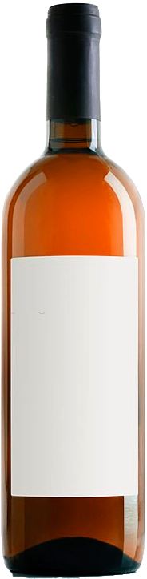

VINOLENCIA ROSADO
$1000
⭐⭐⭐⭐⭐
Vinolencia Rosado nace en viñedos ubicados en Valle de Uco, Mendoza. El vino rosado se elabora estrujando las uvas y manteniendo una maceración de los hollejos con el mosto durante un tiempo en función de la cantidad de color y estructura que le queramos aportar.